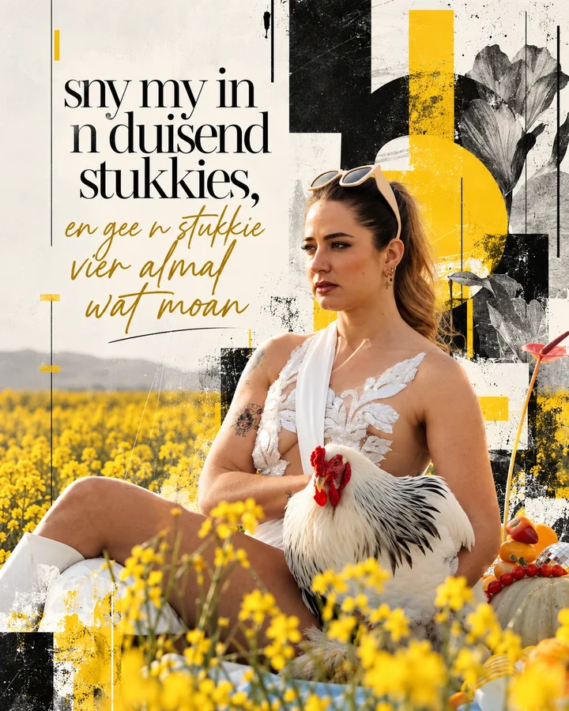
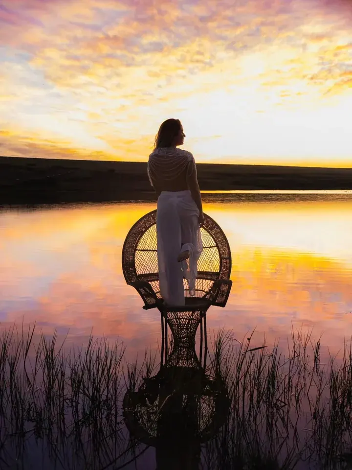
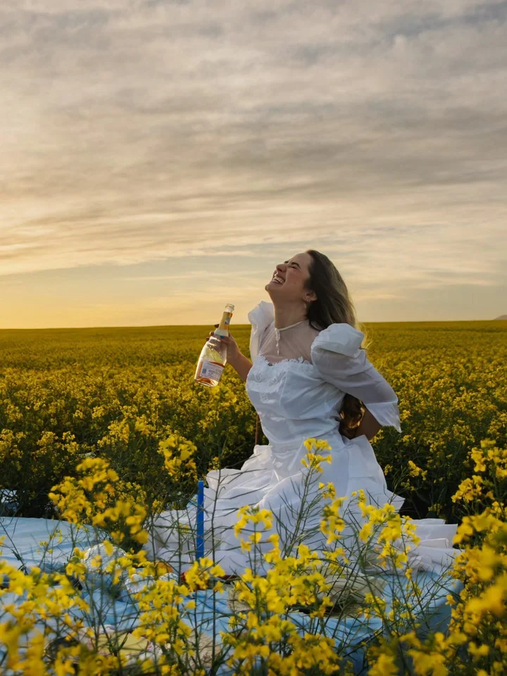

Journal
Elke keer as Andrea oor haar journal post, kry sy DMs: hoe journal jy? Waar begin ek? Hier is haar antwoord, in haar eie woorde.

Dit raak makliker.
Daar is geen regte of verkeerde manier om te journal nie. Maar soos enigiets anders vat dit oefening om agter te kom wat vir jou werk.
Hoe om te begin
Journaling is 'n oefening om jou eie gedagtes te kan hoor.
Ons doen letterlik alles in ons vermoë om ons gedagtes te vermy. Maar as jy jou gedagtes vermy, vermy jy ook jou gevoelens. Hoe meer jy journal, hoe dieper gaan jy in, en daar begin die regte growth en healing.
Journaling is practice at hearing your own thoughts.
In die begin is dit maar 'n bietjie oppervlakkig. Dis okay.
Dit raak beter hoe meer jy dit doen. Jy leer om jouself toe te laat om na die donker plekke te gaan wat jy so lank vermy het.
At first it's a bit surface-level. That's okay.
Dit moet soos 'n vriendin wees waarmee jy kan chat.
Moenie jou journal net met 'n heavy space connect nie. Andrea skryf ook al die exciting, amazing goed hierin. As iets goeds met jou gebeur en daar is daardie een persoon wat jy wil bel: this is her for me.
It should feel like a friend you can't wait to tell.
Dit kan so simpel wees soos: vandag was 'n kakdag.
Jy hoef nie die hele wêreld in jou journal op te los nie.
It can be as simple as: today was a shit day.
You shouldn't judge yourself while writing.
Jy kan enigiets skryf. Dis jou dagboek, jou gedagtes en jou gevoelens, en niemand kan vir jou sê dis verkeerd nie.
Anything goes. It's your diary.

Uit haar eerste dagboek
Dit hoef nie life-changing te wees nie. Dit moet net iets wees wat op jou gemoed is en 'n plek nodig het om te bestaan. Twee bladsye uit 2010. Andrea was 17.
Toe ek vandag weer na hom kyk en hy smile vir my, het die butterflies in my maag mal gegaan. Het vanaand met hom gechat op MXit. He seems nice.
Seventeen finally, and what a great feeling. Wow, tyd het gevlieg. Alles is klaar gereël vir vanaand. Kan nie wag nie. I got a feeling that tonight's gonna be a good, good night.
Woorde om te steel
Tik op 'n reël om dit te kopieer.
Jou bladsy
Vandag was 'n ___ dag, want…
- Vandag was 'n ___ dag, want…
- Wie wou jy vandag bel om iets te vertel?
- Iets kleins wat vandag goed gegaan het:
- Waaraan probeer jy al lank nie dink nie?
- Wat sou jy vir jou 17-jarige self sê?
- Wat het jou vandag laat lag?
Wat jy hier skryf, bly op jou foon. Niemand anders sien dit nie, ook nie Andrea nie.

Wil julle hê sy moet nog stukkies uit haar vroeë journals voorlees?
Sê vir haar op Instagram